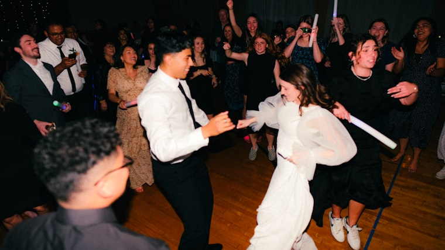
Весілля
Гості самі обирають: танцювати чи говорити. Жодного гуркоту на всю залу — і жодних дзвінків від готелю о другій ночі.
Кожен гість чує музику у власних навушниках і сам вирішує, який із трьох каналів слухати — а зовні панує повна тиша. Перемикайтесь між ними будь-коли за вечір, скільки завгодно разів.
Один плейлист на всіх. Хтось нудьгує, комусь голосно. О 23:00 — сусіди, охорона, «зробіть тихіше». Фото виходять темні й однакові.
Три канали під різний настрій, гучність під себе, світло LED у кожному кадрі. Танці хоч до ранку — і повна тиша ззовні.
Музика йде не з колонок, а одразу в навушники кожного гостя. Один передавач роздає три канали, і людина сама обирає, який слухати і на якій гучності. Колонок немає, тож ззовні залишається тиша: сусіди нічого не чують, а охорона не приходить о 23:00. Ми привозимо навушники із запасними комплектами, збираємо систему на місці й лишаємось на вечір. Від вас потрібні тільки дата й приблизна кількість гостей.
RED, GREEN, BLUE звучать паралельно. У кожного гостя — свій ефір, і всі танцюють в одному залі.
Драйв, хіти чи повільне — гість перемикає канал одним дотиком і залишається там, де йому добре.
Кожен виставляє звук під себе. Ніхто не виходить із дзвоном у вухах — комфортно й дітям, і старшим.
Навушники на шию — і розмова йде звичайним голосом. Без «що?» і «повтори!» крізь гуркіт колонок.
Підсвітка на кожному гості перетворює зал на готову картинку. Фото й відео виходять яскравими без окремого світлового обладнання.
Танці «в тиші» — незвичне відчуття вже з перших хвилин. Гості проводять час не так, як на звичайній вечірці.
Silent disco під ключ — комплект обладнання, логістика й супровід у межах однієї послуги.
Від 40 LED-навушників, 3 канали, передавачі та запасні навушники в комплекті.
Привозимо, збираємо систему, налаштовуємо канали й тестуємо сигнал до старту.
Три канали, зібрані під ваш настрій і формат події — DJ не обов'язковий.
Ведемо технічну частину протягом вечора, а після завершення забираємо все обладнання.
Додаткова опція: ролик вашого вечора, готовий до сторіз і публікації.
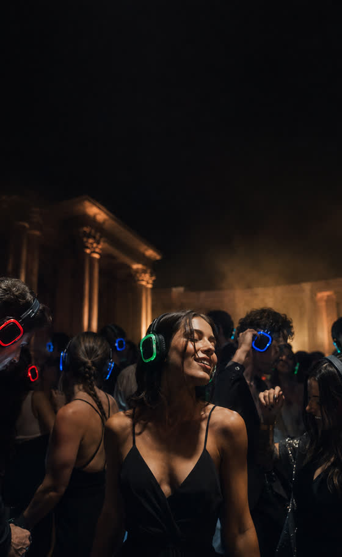
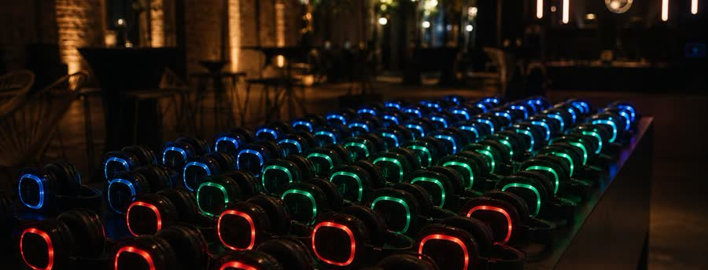
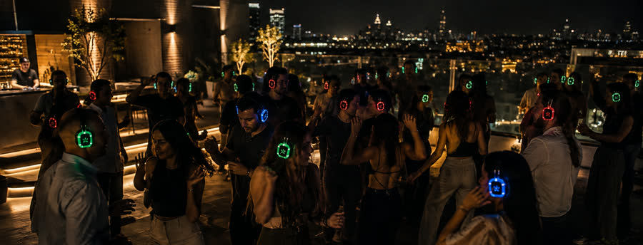
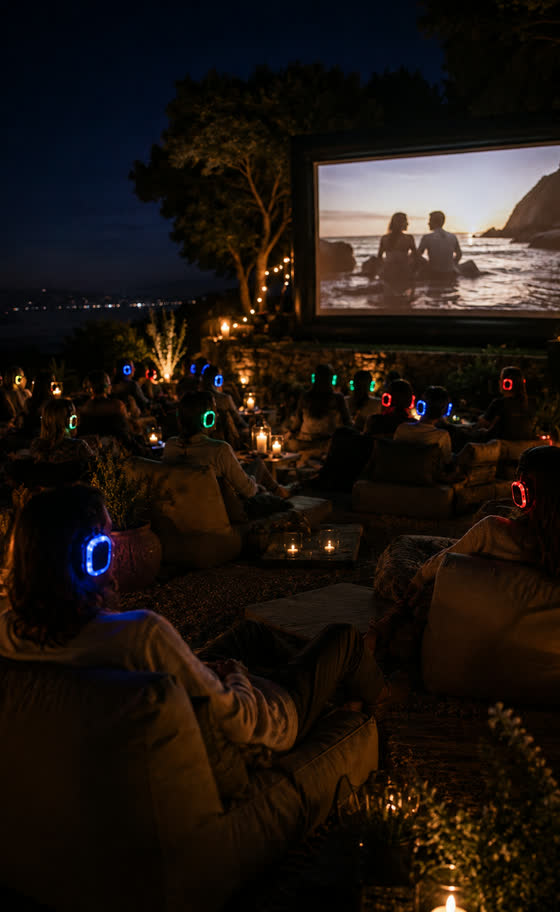
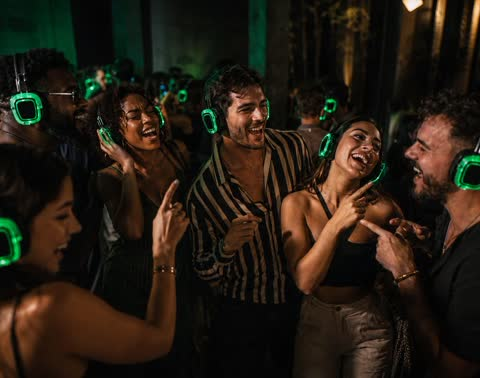
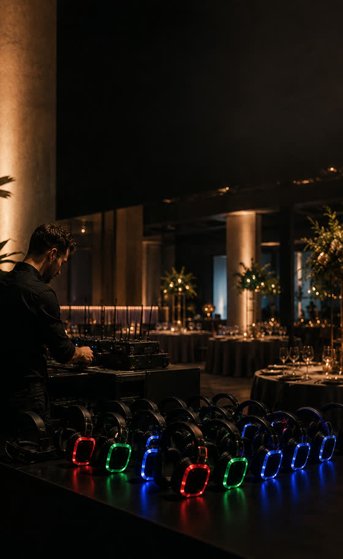
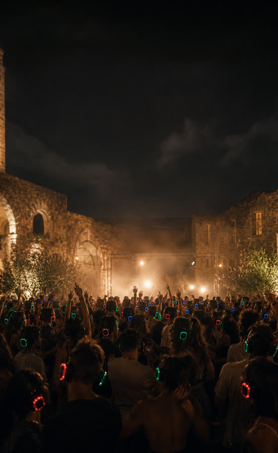
Гортайте вбік, щоб побачити більше кадрів
Один комплект обладнання відкриває десятки форматів — від весілля до екскурсії музеєм. Оберіть свій, і ми зберемо подію під нього.

Гості самі обирають: танцювати чи говорити. Жодного гуркоту на всю залу — і жодних дзвінків від готелю о другій ночі.
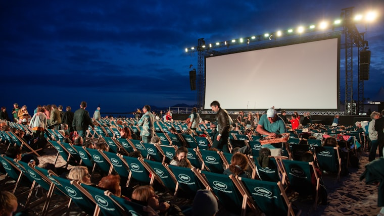
Двір, дах, парк — звук у навушниках, тиша навколо. Фільм до ночі без питань від сусідів.
Посвята, випускний, вечірка гуртожитку — гучно для своїх і тихо для адміністрації.
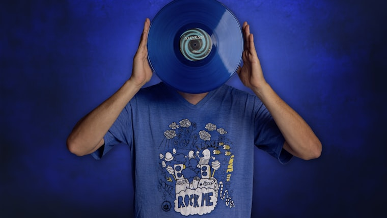
Послухайте новий альбом у деталях — разом і водночас особисто. Камерний формат для перших слухачів.
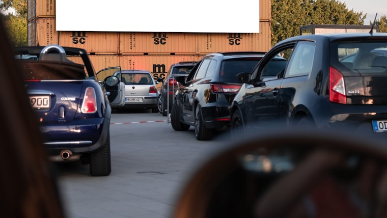
Майданчик, екран і звук у навушниках — подія там, де немає жодної звукової інфраструктури.
Камерне прослуховування студентських програм: чути кожну партію без гучних моніторів у залі.
Додаткова сцена, яка не конфліктує з головною і не впирається в комендантську годину.
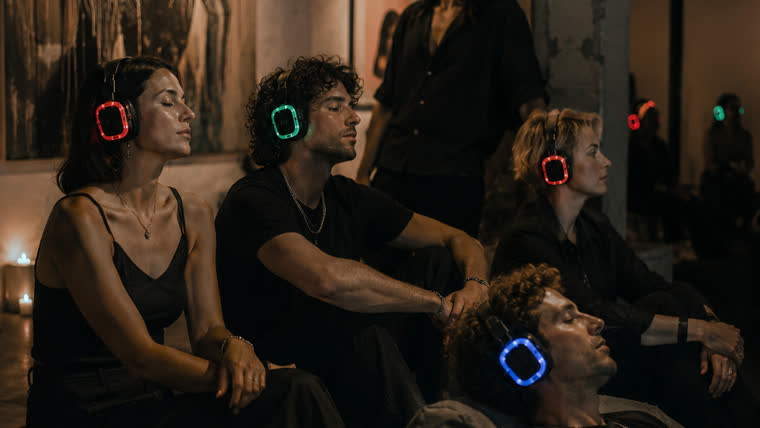
Аудіосупровід, синхронізований із простором. Відвідувач занурюється, не порушуючи тиші зали.
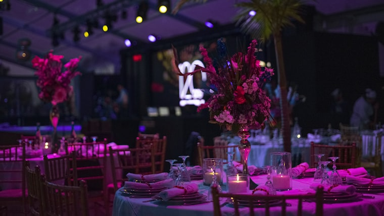
Аукціон і танці в одному залі. Гості чують ведучого, не борючись із фоновою музикою.
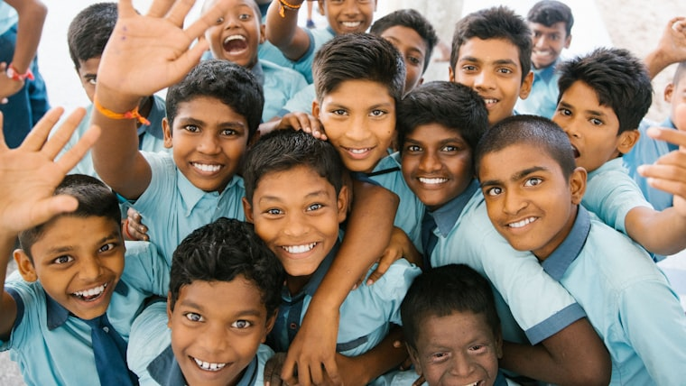
Події та збори коштів, які діти чекають. Без перевантаження звуком у спортзалі.
Ранкові зібрання, тихі години роздумів і вечірні дискотеки — на одному комплекті обладнання.
Той самий формат у чистому вигляді: три канали, навушники й танцпол, який не заважає нікому навколо.
Від дитячого свята до дорослої вечірки: гучність під вік і настрій кожної компанії.
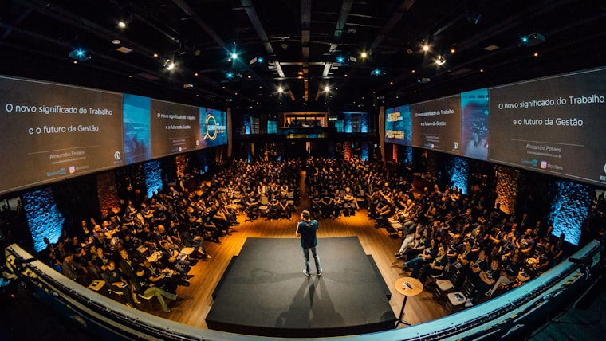
Кілька сцен в одному залі й тихі обговорення в групах. Кожен чує свого спікера, не заважаючи сусідній секції.
Гід говорить упівголоса, а чути однаково добре і в першому ряду, і в останньому. Без крику й мегафона.
Ранкові розминки, командні ігри, вечірня дискотека — один комплект на всі активності зміни.
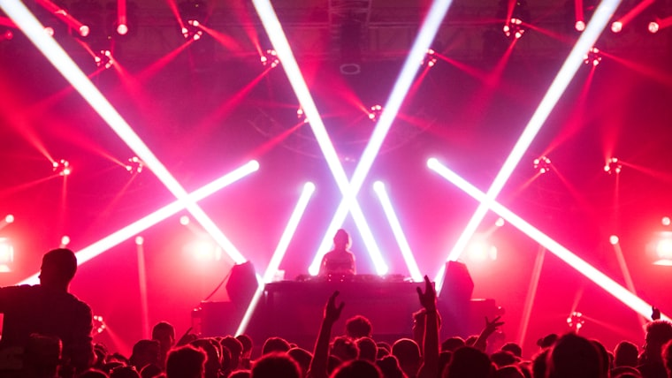
Резидент або запрошений діджей мікшує просто у ваші навушники — з реакцією на зал.
Проповідь і музика звучать чітко для кожного — у залі, у дворі чи на виїзному служінні.
Формат, у якому команда нарешті розкривається. Працює і в офісі, і в лофті — без узгодження гучності з орендодавцем.
Голос інструктора просто у вусі, музика — на власній гучності. Ніщо не збиває з практики.
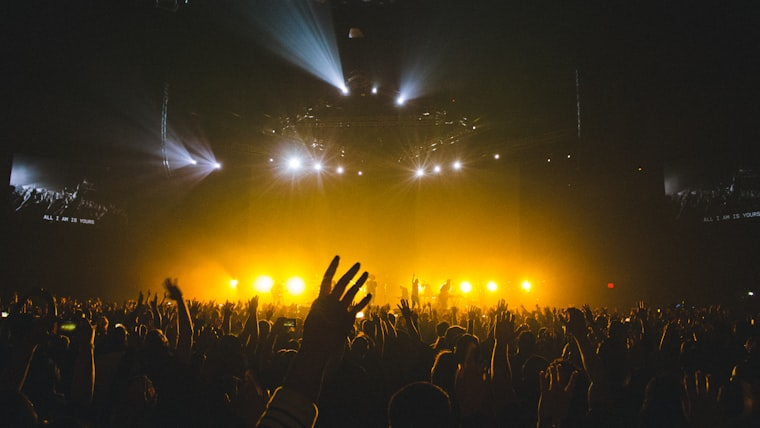
Прослуховування, де чути кожен нюанс виконання. Публіка максимально близько до звуку.
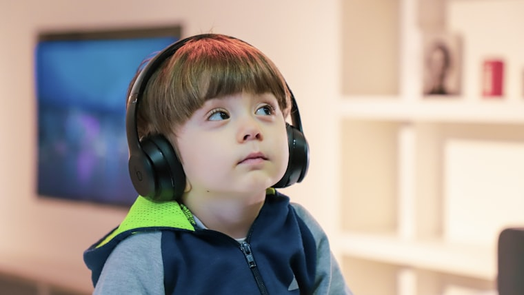
Кожен регулює гучність під себе — подія стає доступною для гостей із сенсорною чутливістю.
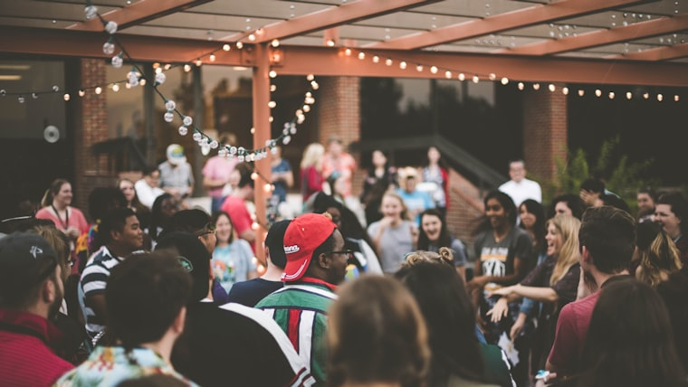
Лекції, покази, зустрічі спільноти — чути кожне слово навіть на відкритому майданчику.
Музична зона просто серед рядів — гості танцюють, а торгівля поруч іде своїм ходом.
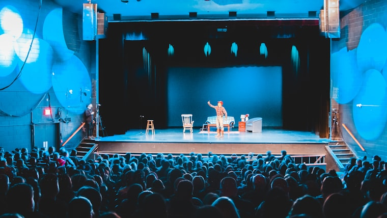
Голос акторів і саундтрек звучать просто у вусі глядача. Сцену можна розгорнути навіть просто неба.
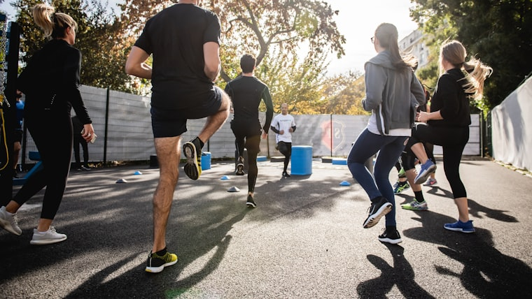
Забіги, тренування, розминки: команда чує тренера, а не вітер і вуличний шум.
Гортайте вбік, щоб побачити всі формати
Мінімальне замовлення — 40 навушників на 4 години. Посуньте повзунок і додайте опції, щоб побачити орієнтовний бюджет для вашої події.
Ми відповідаємо за результат вечора, тож фінансовий ризик беремо на себе.
Короткі враження гостей і організаторів після київських подій.
Боялася, що гості просто постоять із навушниками в руках і підуть. За півгодини танцювали всі, включно з моєю мамою. О другій ночі вимикали самі, бо ніхто не збирався додому.
Лофт із житловими апартаментами через стіну. Скарг нуль, а це для нас було головне питання. Приїхали за дві години до старту й підключили все без нашої участі.
Три канали врятували вечір. Друзі слухають зовсім різне, і замість компромісного плейлиста кожен просто крутнув перемикач на своєму.
Найкраще навіть не музика. Ми з класним керівником спокійно розмовляли посеред танцполу, не зриваючи голос.
Ранкова практика на 40 килимків просто неба. Голос інструктора чути навіть в останньому ряду. З колонками половина групи щоразу випадала.
Показували фільм у внутрішньому дворі до одинадцятої вечора. Без навушників нас зупинили б на двадцятій хвилині.
Нас було всього дванадцять, думала, на такий формат ніхто не візьметься. Взялися й привезли рівно стільки, скільки треба.
Брали як активність на виїзд. Ефект неочікуваний: люди, які на корпоративах зазвичай сидять у кутку, того вечора танцювали.
Гортайте вбік, щоб побачити більше відгуків
Орієнтовно 1 м² на людину для активних танців, менше — якщо частина гостей сидітиме. Скажіть нам розмір залу й кількість гостей — порахуємо, чи вистачить простору, і порадимо оптимальну кількість навушників.
Так, але обладнання залежить від живлення і не любить вологу. У дощ або без розетки поруч потрібен запасний план — намет, навіс або перенесення в приміщення. Обговорюємо це заздалегідь, коли дізнаємось локацію.
Навушники працюють 10+ годин без підзарядки — вистачає на будь-який вечір з запасом. Приїжджаємо із зарядженим комплектом, тож про це можна не думати.
Не обов'язково. Наймати живого DJ — це окрема стаття витрат, зазвичай суттєва сума за вечір. Ми наперед готуємо три плейлисти під ваш настрій, тож DJ потрібен, лише якщо хочете живий мікс саме на місці.
Ставимо один пункт видачі й повернення на вході, щоб нічого не губилося. При потребі використовуємо просту систему обліку, щоб наприкінці вечора точно знати, що все зібрано — без незручних питань до гостей.
Так. У кожного гостя — особиста гучність, тож дитячий слух легко вберегти від зайвого звуку. Для подій із малими дітьми радимо одразу обмежити гучність на нижчому рівні — про це подбаємо ще до початку.
Таке трапляється на живих вечірках, тому ми закладаємо невеликий заставний внесок за комплект, який повертається одразу після того, як усе обладнання здано в цілості. Якщо один-два навушники не повернули чи пошкодили — покриваємо це із застави, без додаткових розбирань із вами. Про суму й умови домовляємось заздалегідь, до самого івенту.
Залиште заявку — ми зв'яжемося, перевіримо, чи вільна дата, підберемо формат і підтвердимо бронь після узгодження.
Дякуємо! Ми зв'яжемося найближчим часом, щоб узгодити деталі й підтвердити дату вашого вечора.